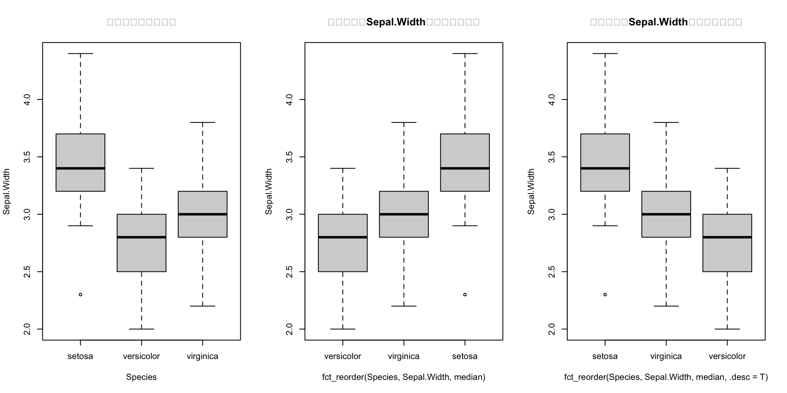
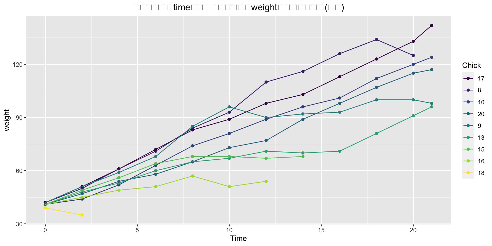

Show the code
[1] 男 女 男 男 女
Levels: 女 男zsc
2018年1月14日
变量可归结为名义型、有序型或连续型变量，
类别（名义型）变量和有序类别（有序型）变量在R中称为因子（factor） ，如性别、省份、职业。
类别（名义型）变量是没有顺序之分的类别变量。
有序型变量表示一种顺序关系，代表有序量度，如打分结果，疾病严重程度等。而非数量关系。
连续型变量可以呈现为某个范围内的任意值，比如年龄
针对因子型数据，我们一般需要用到三种变化
用factor()函数把字符型向量转换成因子，如
[1] 男 女 男 男 女
Levels: 女 男attributes(sex)$levels
[1] "女" "男"
$class
[1] "factor"因子有class属性，取值为"factor"， 还有一个levels(水平值)属性， 此属性可以用levels()函数访问，如
levels(sex)#查看某个因子的标签有哪些[1] "女" "男"因子的levels属性可以看成是一个映射， 把整数值1,2,…,映射成这些水平值， 因子在保存时会保存成整数值1,2,等与水平值对应的编号。 这样可以节省存储空间， 在建模计算的程序中也比较有利于进行数学运算。
要表示有序型变量，需要为函数factor()指定参数ordered=TRUE。给定向量：
[1] Poor Improved Excellent Poor
Levels: Excellent < Improved < Poor[1] Poor Improved Excellent Poor
Levels: Poor < Improved < Excellent[1] 1 2 1 1 2
Levels: 1 2[1] Male Female Male Male Female
Levels: Male Femalefactor()函数的一般形式为
可以用选项levels自行指定各水平值, 不指定时由x的不同值来求得。 可以用选项labels指定各水平的标签, 不指定时用各水平值的对应字符串。可以用exclude选项指定要转换为缺失值(NA)的元素值集合。 如果指定了levels, 则当自变量x的某个元素等于第个水平值时输出的因子对应元素值取整数, 如果该元素值没有出现在levels中则输出的因子对应元素值取NA。 ordered取真值时表示因子水平是有次序的(按编码次序)。
事实上，经常处理数据的时候，数据都是给定的，读入数据的时候常用 read.csv()函数的默认操作会把输入文件的字符型列自动转换成因子， 这对于性别、职业、地名这样的列是合适的， 但是对于姓名、日期、详细地址这样的列则不合适。 所以，在read.csv()调用中经常加选项stringsAsFactors=FALSE选项禁止这样的自动转换，还可以用colClasses选项逐个指定每列的类型。
用as.numeric()可以把因子转换为纯粹的整数值，如
as.numeric(sex)[1] 1 2 1 1 2因为因子实际保存为整数值， 所以对因子进行一些字符型操作可能导致错误。 用as.character()可以把因子转换成原来的字符型，如
as.character(sex)[1] "Male" "Female" "Male" "Male" "Female"为了对因子执行字符型操作（如取子串）， 保险的做法是先用as.character()函数强制转换为字符型。
因为一个因子的levels属性是该因子独有的， 所以合并两个因子有可能造成错误。如
[1] 男 女 男 男
Levels: 女 男结果不再是因子。 正确的做法是
factor(c(as.character(li1), as.character(li2)))#合并因子正确的方法[1] 男 女 男 男
Levels: 女 男即恢复成字符型后合并， 然后再转换为因子。 在合并两个数据框时也存在这样的问题。 当然，如果在定义li1和li2 时都用了levels=c('男', '女')选项， c(li1, li2)也能给出正确结果。
table()函数用table()函数统计因子各水平的出现次数（称为频数或频率）。
table(sex) #返回一个特殊的有元素名的向量sex
Male Female
3 2 对一个变量用table函数计数的结果是一个特殊的有元素名的向量， 元素名是自变量的不同取值， 结果的元素值是对应的频数。 单个因子或单个向量的频数结果可以用向量的下标访问方法取出单个频数或若干个频数的子集。
在分类变量类数较多时，往往需要对因子水平另外排序、合并等， forcats包提供了一些针对因子的方便函数。
其中的函数分为如下几类，未特别指明levels和标签一样
1.修改levels顺序的函数，向量内元素不变
| 函数 | 功能 |
|---|---|
| fct_relevel(f, …, after = 0L) | 手动重新排列因子水平 |
| fct_inorder(f, ordered = NA) | 按照第一次出现的次序排列 |
| fct_infreq(f, ordered = NA) | 按照出现的频率排列 |
| fct_reorder(f, x, fun = median, …, .desc = FALSE) | 通过对另一个变量进行排序来重新排列因子水平 |
| fct_reorder2(f, x, y, fun = last2, …, .desc = TRUE) | 同上，作用不一样 |
| fct_shuffle(f) | 随机排列因子水平 |
| fct_rev(f) | 倒序 |
| fct_shift(f, n = 1L) | 实现前后移动，滚动变化 |
2.变换levels名称的函数
| 函数 | 作用 |
|---|---|
| fct_anon(f,prefix=““) | levels用升序的数字替代，prefix参数表示在数字前面要保留的字符 |
| fct_collapse(f, …) | levels更改，主要用于levels的合并 |
| fct_recode(f, …) | 手动更改,把指定的标签进行更改 |
| fct_lump(f, n, prop, other_level = “Other”, ties.method = c(“min”,“average”, “first”, “last”, “random”, “max”)) | 将最小/最常见的因子水平（levels）合并为“other” |
| 若n, prop的值丢失，则将出现次数比较低的标签结合在一起变为other(算法没弄懂，何为比较低) 若指定n，表明保留n个最多的level，其余的变为other，指定负数，表明保留最少的 若指定prop=0.1 表明保留数量超过10%的level，其余的变为other,同理可以指定负数 ties.method可以指定计算方法（同时指定n），若为max,表明次数超过n的保留，低于n的改变为other 指定other_level可以更改替换名称 |
|
| fct_other(f, keep, drop, other_level = “Other”) | 若指定keep,将指定的 level保留，其余变成”other”, 若指定drop,将指定的 level 设置成”other” |
| fct_relabel(f, fun, …) | 在原有基础上进行修改 |
3.其他函数
| 函数 | 作用 |
|---|---|
| fct_c(f1,f2) | 将两个factor结合 或者fct_c(list(f1, f2)) |
| fct_count(f, sort = FALSE) | 对factor的标签进行统计计数并转化为tibble |
| fct_unique(f) | 对每一个level只有一个，向量中元素按照level的顺序排列 |
| fct_drop(f) | 默认将没有对应level值去掉 |
| fct_explicit_na(f, na_level = “(Missing)”) | 使显式值缺失 |
（下面三个更一般的函数，上面这些函数都有着特定的功能，基本上都是调用下面这三个函数实现的）
| 函数 | 作用 |
|---|---|
| lvls_reorder(f, idx, ordered = NA) | 更改level顺序 |
| lvls_revalue(f, new_levels) | 整体更改level名称 |
| lvls_expand(f, new_levels) | 增加额外的level值 |
1.修改level顺序的函数使用
[1] a b c d
Levels: a b c dfct_relevel(f, "c") # 把水平c移动到第一位[1] a b c d
Levels: c a b dfct_relevel(f, "b", "a") #把水平b a 移动到前两位[1] a b c d
Levels: b a c dfct_relevel(f, "a", after = 2) # 把水平a放在第2位之后，即放在第3位[1] a b c d
Levels: b c a dfct_relevel(f, "a", after = Inf) # 把水平a移动到最后[1] a b c d
Levels: b c d a#########################################
f <- factor(c("b", "b", "a", "c", "c", "c"))
fct_inorder(f) # 按照第一次出现的次序排列[1] b b a c c c
Levels: b a cfct_infreq(f) # 按照出现的频率排列[1] b b a c c c
Levels: c b a#######################
# 随机排序
f <- factor(c("a", "b", "c"))
fct_shuffle(f)[1] a b c
Levels: a c bfct_shuffle(f)[1] a b c
Levels: a c b[1] a b c
Levels: c b a#######################
fct_shift(f) # 第一项放到最后[1] a b c
Levels: b c afct_shift(f, 2) # 前两项放在最后[1] a b c
Levels: c a bfct_shift(f, -1) # 最后一项移到最前面[1] a b c
Levels: c a b######################################################################
##fac_reorder()可以根据不同因子水平分成的组中另一数值型变量的统计量值排序##
######################################################################
par(mfrow=c(1,3))
boxplot(Sepal.Width ~ Species, data = iris,main="因子顺序按默认排序")#默认的图,因子顺序按默认排序
# 按照分组变量Sepal.Width的均值从小到大排列(默认)
boxplot(Sepal.Width ~ fct_reorder(Species, Sepal.Width, median), data = iris,main="按分组变量Sepal.Width的均值升序排列")
# 设置.desc=T，则从大到小
boxplot(Sepal.Width ~ fct_reorder(Species, Sepal.Width, median, .desc=T), data = iris,main="按分组变量Sepal.Width的均值降序排列") 
par(mfrow=c(1,1))
# 按照分组变量time的最后一个值对应的weight的大小顺序排列（升序）
chks <- subset(ChickWeight, as.integer(Chick) < 10)
chks <- transform(chks, Chick = fct_shuffle(Chick))#fct_shuffle()函数随机排列因子水平
ggplot(chks, aes(Time, weight, colour = fct_reorder2(Chick, Time, weight))) +
geom_point()+geom_line() +labs(colour = "Chick")+ggtitle("按照分组变量time的最后一个值对应的weight的大小顺序排列(升序)")+
theme(plot.title = element_text(hjust = 0.5)) #也就加上这一行标题就居中了
2.修改level标签的函数使用
[1] 2 2 1 3 3 3
Levels: 1 2 3fct_anon(f, "x") # prefix参数表示在数字前面要保留的字符[1] x2 x2 x1 x3 x3 x3
Levels: x1 x2 x3fct_collapse(f, "x"=c("a","b"), "y"="c") #把a。b标签合并成x，c标签替代为y[1] x x x y y y
Levels: x yfct_collapse(f, "x"=c("a","b")) # 只改变一部分也可以[1] x x x c c c
Levels: x c.
A B C D E F G H I
40 10 5 27 1 1 1 1 1 .
A D Other
40 27 20 .
A Other D
40 20 27 [1] A A A A A A A A A A A A
[13] A A A A A A A A A A A A
[25] A A A A A A A A A A A A
[37] A A A A B B B B B B B B
[49] B B Other Other Other Other Other Other Other Other Other Other
[61] Other Other Other Other Other Other Other Other Other Other Other Other
[73] Other Other Other Other Other Other Other Other Other Other Other Other
[85] Other Other Other
Levels: A B Other [1] Other Other Other Other Other Other Other Other Other Other Other Other
[13] Other Other Other Other Other Other Other Other Other Other Other Other
[25] Other Other Other Other Other Other Other Other Other Other Other Other
[37] Other Other Other Other Other Other Other Other Other Other Other Other
[49] Other Other C C C C C D D D D D
[61] D D D D D D D D D D D D
[73] D D D D D D D D D D E F
[85] G H I
Levels: C D E F G H I Other# 手动更改
x <- factor(c("apple", "bear", "banana", "dear"))
fct_recode(x, fruit = "apple", "fruit" = "banana")#把标签apple替换为friut，banana也替换为friut,双引号可加可不加[1] fruit bear fruit dear
Levels: fruit bear dearfct_recode(x, NULL = "apple", fruit = "banana") # 移除apple标签，向量对应位置变成NA[1] <NA> bear fruit dear
Levels: fruit bear dear3.其他函数
# A tibble: 3 × 2
f n
<fct> <int>
1 a 1
2 b 2
3 c 3# 唯一化
unique(f)[1] b a c
Levels: a b cfct_unique(f) # 向量中元素按照level的顺序排列[1] a b c
Levels: a b c[1] a b
Levels: a b cfct_drop(f) # 默认将没有对应值的level去掉[1] a b
Levels: a bfct_lump(f, n, prop)： 根据因子水平（levels）的值合并为“other”
fct_collapse(f, …) : levels更改，主要用于levels的合并（主要合并现有的因子水平）
fac_reorder() : 可以根据不同因子水平分成的组中另一数值型变量的统计量值排序。
fct_count(f, sort = FALSE) : 对factor的标签进行统计计数并转化为tibble
R version 4.2.1 (2022-06-23)
Platform: aarch64-apple-darwin20 (64-bit)
Running under: macOS Monterey 12.5.1
Matrix products: default
BLAS: /Library/Frameworks/R.framework/Versions/4.2-arm64/Resources/lib/libRblas.0.dylib
LAPACK: /Library/Frameworks/R.framework/Versions/4.2-arm64/Resources/lib/libRlapack.dylib
locale:
[1] en_US.UTF-8/en_US.UTF-8/en_US.UTF-8/C/en_US.UTF-8/en_US.UTF-8
attached base packages:
[1] stats graphics grDevices utils datasets methods base
other attached packages:
[1] ggplot2_3.3.6 forcats_0.5.2
loaded via a namespace (and not attached):
[1] compiler_4.2.1 pillar_1.8.1 tools_4.2.1 digest_0.6.29
[5] viridisLite_0.4.1 jsonlite_1.8.0 evaluate_0.16 lifecycle_1.0.1
[9] tibble_3.1.8 gtable_0.3.0 pkgconfig_2.0.3 rlang_1.0.4
[13] DBI_1.1.3 cli_3.3.0 rstudioapi_0.14 yaml_2.3.5
[17] xfun_0.32 fastmap_1.1.0 withr_2.5.0 stringr_1.4.1
[21] dplyr_1.0.9 knitr_1.40 generics_0.1.3 htmlwidgets_1.5.4
[25] vctrs_0.4.1 grid_4.2.1 tidyselect_1.1.2 glue_1.6.2
[29] R6_2.5.1 fansi_1.0.3 rmarkdown_2.16.1 farver_2.1.1
[33] purrr_0.3.4 magrittr_2.0.3 ellipsis_0.3.2 scales_1.2.1
[37] htmltools_0.5.3 assertthat_0.2.1 colorspace_2.0-3 labeling_0.4.2
[41] utf8_1.2.2 stringi_1.7.8 munsell_0.5.0 ---
title: 因子数据类型处理
date: '2018-01-14'
categories:
- r
- factor
---
```{r setup, include=FALSE}
knitr::opts_chunk$set(message=FALSE, warning=FALSE)
```
变量可归结为名义型、有序型或连续型变量，
**类别（名义型）变量**和**有序类别（有序型）变量**在R中称为**因子（factor）** ，如性别、省份、职业。
- **类别（名义型）变量**是没有顺序之分的类别变量。
- **有序型变量**表示一种顺序关系，代表有序量度，如打分结果，疾病严重程度等。而非数量关系。
**连续型变量**可以呈现为某个范围内的任意值，比如年龄
### 1、基础函数
针对因子型数据，我们一般需要用到三种变化
- 更改level标签名
- 更改level顺序
- 创建有序因子
用`factor()`函数把字符型向量转换成因子，如
```{r}
x <- c("男", "女", "男", "男", "女")
sex <- factor(x) #将此向量存储为(1, 2, 1, 1，2)，并在内部将其关联为1="男"和2="女"（具体赋值根据字母顺序而定）。
sex
```
```{r}
attributes(sex)
```
因子有class属性，取值为`"factor"`， 还有一个`levels`(水平值)属性， 此属性可以用`levels()`函数访问，如
```{r}
levels(sex)#查看某个因子的标签有哪些
```
因子的`levels`属性可以看成是一个映射， 把整数值1,2,...,映射成这些水平值， 因子在保存时会保存成整数值1,2,等与水平值对应的编号。 这样可以节省存储空间， 在建模计算的程序中也比较有利于进行数学运算。
要表示**有序型变量**，需要为函数factor()指定参数ordered=TRUE。给定向量：
```{r}
status <- c("Poor", "Improved", "Excellent", "Poor")
status1 <- factor(status, ordered=TRUE)#会默认关联其值并且按关联的值排序（其实按ascii码表排序），
status1 # 明显可以看出这要的排序并不是我们想要的。
#可以用选项levels自行指定各水平值, 不指定时由x的不同值来求得。
status2 <- factor(status, order=TRUE,levels=c("Poor", "Improved", "Excellent"))
status2
#也可以将数字型变量转为因子变量 ，
x <- c(1, 2, 1, 1, 2)
(sex=factor(x)) #可以看出，因子水平没有任何区分,可以用labels指定标签
sex <- factor(x, levels=c(1, 2),labels=c("Male", "Female")) #注意到标签的顺序必须和水平相一致
sex
```
`factor()`函数的一般形式为
```R
factor(x, levels = sort(unique(x), na.last = TRUE), labels, exclude = NA, ordered = FALSE)
```
可以用选项`levels`自行指定各水平值, 不指定时由x的不同值来求得。 可以用选项`labels`指定各水平的标签, 不指定时用各水平值的对应字符串。可以用`exclude`选项指定要转换为缺失值(NA)的元素值集合。 如果指定了`levels`, 则当自变量`x`的某个元素等于第个水平值时输出的因子对应元素值取整数, 如果该元素值没有出现在`levels`中则输出的因子对应元素值取NA。 `ordered`取真值时表示因子水平是有次序的(按编码次序)。
事实上，经常处理数据的时候，数据都是给定的，读入数据的时候常用 `read.csv()`函数的默认操作会把输入文件的字符型列自动转换成因子， 这对于性别、职业、地名这样的列是合适的， 但是对于姓名、日期、详细地址这样的列则不合适。 所以，在`read.csv()`调用中经常加选项`stringsAsFactors=FALSE`选项禁止这样的自动转换，还可以用`colClasses`选项逐个指定每列的类型。
用`as.numeric()`可以把因子转换为纯粹的整数值，如
```{r}
as.numeric(sex)
```
因为因子实际保存为整数值， 所以对因子进行一些字符型操作可能导致错误。 用`as.character()`可以把因子转换成原来的字符型，如
```{r}
as.character(sex)
```
为了对因子执行字符型操作（如取子串）， 保险的做法是先用`as.character()`函数强制转换为字符型。
因为一个因子的levels属性是该因子独有的， 所以合并两个因子有可能造成错误。如
```{r}
li1 <- factor(c('男', '女'))
li2 <- factor(c('男', '男'))
c(li1, li2)
```
结果不再是因子。 正确的做法是
```{r}
factor(c(as.character(li1), as.character(li2)))#合并因子正确的方法
```
即恢复成字符型后合并， 然后再转换为因子。 在合并两个数据框时也存在这样的问题。 当然，如果在定义`li1`和`li2` 时都用了`levels=c('男', '女')`选项， `c(li1, li2)`也能给出正确结果。
#### `table()`函数
用`table()`函数统计因子各水平的出现次数（称为频数或频率）。
```{r}
table(sex) #返回一个特殊的有元素名的向量
```
对一个变量用table函数计数的结果是一个特殊的有元素名的向量， 元素名是自变量的不同取值， 结果的元素值是对应的频数。 单个因子或单个向量的频数结果可以用向量的下标访问方法取出单个频数或若干个频数的子集。
### 2、forcats包的处理因子函数
在分类变量类数较多时，往往需要对因子水平另外排序、合并等， forcats包提供了一些针对因子的方便函数。
其中的函数分为如下几类，未特别指明levels和标签一样
**1.修改levels顺序的函数，向量内元素不变**
| 函数 | 功能 |
| ---------------------------------------- | --------------------- |
| fct_relevel(f, ..., after = 0L) | 手动重新排列因子水平 |
| fct_inorder(f, ordered = NA) | 按照第一次出现的次序排列 |
| fct_infreq(f, ordered = NA) | 按照出现的频率排列 |
| fct_reorder(f, x, fun = median, ..., .desc = FALSE) | 通过对另一个变量进行排序来重新排列因子水平 |
| fct_reorder2(f, x, y, fun = last2, ..., .desc = TRUE) | 同上，作用不一样 |
| fct_shuffle(f) | 随机排列因子水平 |
| fct_rev(f) | 倒序 |
| fct_shift(f, n = 1L) | 实现前后移动，滚动变化 |
**2.变换levels名称的函数**
| 函数 | 作用 |
| ---------------------------------------- | ---------------------------------------- |
| fct_anon(f,prefix="") | levels用升序的数字替代，prefix参数表示在数字前面要保留的字符 |
| fct_collapse(f, ...) | levels更改，主要用于levels的合并 |
| fct_recode(f, ...) | 手动更改,把指定的标签进行更改 |
| **fct_lump(f, n, prop, other_level = "Other", ties.method = c("min","average", "first", "last", "random", "max"))** | 将最小/最常见的因子水平（levels）合并为“other”<br /> |
| | 若n, prop的值丢失，则将出现次数比较低的标签结合在一起变为other(算法没弄懂，何为比较低)<br />若指定n，表明保留n个最多的level，其余的变为other，指定负数，表明保留最少的<br />若指定prop=0.1 表明保留数量超过10%的level，其余的变为other,同理可以指定负数<br />ties.method可以指定计算方法（同时指定n），若为max,表明次数超过n的保留，低于n的改变为other<br />指定other_level可以更改替换名称 |
| fct_other(f, keep, drop, other_level = "Other") | 若指定keep,将指定的 level保留，其余变成"other",<br />若指定drop,将指定的 level 设置成"other" |
| fct_relabel(f, fun, ...) | 在原有基础上进行修改 |
**3.其他函数**
| 函数 | 作用 |
| ---------------------------------------- | --------------------------------- |
| fct_c(f1,f2) | 将两个factor结合 或者fct_c(list(f1, f2)) |
| fct_count(f, sort = FALSE) | 对factor的标签进行统计计数并转化为tibble |
| fct_unique(f) | 对每一个level只有一个，向量中元素按照level的顺序排列 |
| fct_drop(f) | 默认将没有对应level值去掉 |
| fct_explicit_na(f, na_level = "(Missing)") | 使显式值缺失 |
（下面三个更一般的函数，上面这些函数都有着特定的功能，基本上都是调用下面这三个函数实现的）
| 函数 | 作用 |
| ----------------------------------- | ----------- |
| lvls_reorder(f, idx, ordered = NA) | 更改level顺序 |
| lvls_revalue(f, new_levels) | 整体更改level名称 |
| lvls_expand(f, new_levels) | 增加额外的level值 |
### 3、例子
1.修改level顺序的函数使用
```{r}
library(forcats)
library(ggplot2)
f <- factor(c("a", "b", "c", "d"))
fct_relevel(f) # 查看f的levels
fct_relevel(f, "c") # 把水平c移动到第一位
fct_relevel(f, "b", "a") #把水平b a 移动到前两位
fct_relevel(f, "a", after = 2) # 把水平a放在第2位之后，即放在第3位
fct_relevel(f, "a", after = Inf) # 把水平a移动到最后
#########################################
f <- factor(c("b", "b", "a", "c", "c", "c"))
fct_inorder(f) # 按照第一次出现的次序排列
fct_infreq(f) # 按照出现的频率排列
#######################
# 随机排序
f <- factor(c("a", "b", "c"))
fct_shuffle(f)
fct_shuffle(f)
########################
# 倒序
f <- factor(c("a", "b", "c"))
fct_rev(f)
#######################
fct_shift(f) # 第一项放到最后
fct_shift(f, 2) # 前两项放在最后
fct_shift(f, -1) # 最后一项移到最前面
```
```{r,fig.width=10}
######################################################################
##fac_reorder()可以根据不同因子水平分成的组中另一数值型变量的统计量值排序##
######################################################################
par(mfrow=c(1,3))
boxplot(Sepal.Width ~ Species, data = iris,main="因子顺序按默认排序")#默认的图,因子顺序按默认排序
# 按照分组变量Sepal.Width的均值从小到大排列(默认)
boxplot(Sepal.Width ~ fct_reorder(Species, Sepal.Width, median), data = iris,main="按分组变量Sepal.Width的均值升序排列")
# 设置.desc=T，则从大到小
boxplot(Sepal.Width ~ fct_reorder(Species, Sepal.Width, median, .desc=T), data = iris,main="按分组变量Sepal.Width的均值降序排列")
par(mfrow=c(1,1))
# 按照分组变量time的最后一个值对应的weight的大小顺序排列（升序）
chks <- subset(ChickWeight, as.integer(Chick) < 10)
chks <- transform(chks, Chick = fct_shuffle(Chick))#fct_shuffle()函数随机排列因子水平
ggplot(chks, aes(Time, weight, colour = fct_reorder2(Chick, Time, weight))) +
geom_point()+geom_line() +labs(colour = "Chick")+ggtitle("按照分组变量time的最后一个值对应的weight的大小顺序排列(升序)")+
theme(plot.title = element_text(hjust = 0.5)) #也就加上这一行标题就居中了
```
2.修改level标签的函数使用
```{r}
f <- factor(c("b", "b", "a", "c", "c", "c"))
fct_anon(f) #levels用升序的数字替代，
fct_anon(f, "x") # prefix参数表示在数字前面要保留的字符
fct_collapse(f, "x"=c("a","b"), "y"="c") #把a。b标签合并成x，c标签替代为y
fct_collapse(f, "x"=c("a","b")) # 只改变一部分也可以
x <- factor(rep(LETTERS[1:9], times = c(40, 10, 5, 27, 1, 1, 1, 1, 1)))
x %>% table() #统计标签的出现的次数
x %>% fct_lump() %>% table() #把出现次数比较低值得标签保留，其余的变成other,并统计出现的次数
x %>% fct_lump() %>% fct_inorder() %>% table()
# 将指定的level设置成other
x <- factor(rep(LETTERS[1:9], times = c(40, 10, 5, 27, 1, 1, 1, 1, 1)))
fct_other(x, keep = c("A", "B")) # 保留这两个A、B这两个标签，其余变为other
fct_other(x, drop = c("A", "B")) # 把A、B这个两个标签变成other
# 手动更改
x <- factor(c("apple", "bear", "banana", "dear"))
fct_recode(x, fruit = "apple", "fruit" = "banana")#把标签apple替换为friut，banana也替换为friut,双引号可加可不加
fct_recode(x, NULL = "apple", fruit = "banana") # 移除apple标签，向量对应位置变成NA
```
3.其他函数
```{r}
# 对每一个level计数
f <- factor(c("b", "b", "a", "c", "c", "c"))
fct_count(f) # 对factor的标签进行统计计数并转化为tibble
# 唯一化
unique(f)
fct_unique(f) # 向量中元素按照level的顺序排列
f <- factor(c("a", "b"), levels = c("a", "b", "c"))
f
fct_drop(f) # 默认将没有对应值的level去掉
```
### 4、forcats包因子总结
fct_lump(f, n, prop)： 根据因子水平（levels）的值合并为“other”
fct_collapse(f, ...) : levels更改，主要用于levels的合并（主要合并现有的因子水平）
fac_reorder() : 可以根据不同因子水平分成的组中另一数值型变量的统计量值排序。
fct_count(f, sort = FALSE) : 对factor的标签进行统计计数并转化为tibble
```{r}
sessionInfo()
```